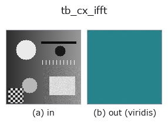

typed op• Data kinds: cimage → image
• Call: fullseye.apply(img, "tb_cx_ifft", a=0.5, b=0.5) (2-D model = एक image + दो scalar knobs a,b∈[0,1])

*Figure synthetic 128×128 input पर सच में चलाकर मिला output है। बाईं ओर input, दाईं ओर output। Point clouds ऊपर से देखे गए scatter के रूप में (brightness = z), 1-D series line के रूप में, volumes z दिशा में maximum-intensity projection के रूप में, videos बीच के frame के रूप में, complex images amplitude के रूप में, और जो return values चित्र नहीं बन सकते वे स्वयं values के रूप में दिखाए जाते हैं।*
*Output viridis जैसे pseudo-colour में है (गहरा बैंगनी = कम, पीला = अधिक), ताकि distance, phase, orientation, depth जैसे "मात्राओं के field" पढ़े जा सकें।*
*Knob a output नहीं बदलता (मापा गया: 0.1 / 0.5 / 0.9 पर एक जैसा)।*
*Knob b output नहीं बदलता (मापा गया: 0.1 / 0.5 / 0.9 पर एक जैसा)।*
Stages (पहले आने वाले ops → यह op, बाएँ से क्रम में):
▸ tb_cx_ifft: stages का figure (docs site)
दूसरी images पर भी (synthetic scene / photo / coins। ऊपर की row में inputs, नीचे की row में उनके outputs। Knobs default पर):
▸ tb_cx_ifft: दूसरी images पर output (docs site)
cx_fft का inverse: ifft2(ifftshift(cx))।
> नीचे का विस्तृत विवरण मूल text में है — सारांश और headings का अनुवाद हो चुका है।
With real=True (default) the real part is returned as an image (the imaginary part is numerical dust for a spectrum that came from a real image); with real=False the full complex spatial field is returned (holography / coherent imaging, where the imaginary part carries signal). A real array is FFT'd first (module convenience), making cx_ifft an involution on it.
Typed bridge of the 2d op cx_ifft into the 2-D evolution registry: the same implementation, called under the op(v, a, b) convention. This op has no tunable parameter; a and b are unused.
• Sample data catalog (DL URL / license) — 2-D के लिए skimage.data (BSD/public) + synthetic, 3-D के लिए real data sources (Stanford/PDS आदि) के DL URL।
• Operators का स्रोत और संदर्भ — इस op family के मूल research/methods के स्रोत।
नीचे का program सच में चलता है, यह जाँचा गया है (figure वाला ही input)। Studio की help में यह block buttons बन जाता है, जिनसे इसे वहीं load करके चलाया जा सकता है।
img_to_cimage 0.50 0.50 tb_cx_ifft 0.50 0.50
▸ यह pipeline load करें · Load करके चलाएँ
• (अभी कुछ नहीं)
image को input के रूप में लेते हैं)identity · gaussian · mean_box · bilateral · unsharp · median · min_filter · max_filter
typed)tb_points_to_voxel · tb_estimate_point_normals · tb_iss_keypoints · tb_project_points · tb_render_point_depth · tb_statistical_outlier_removal · tb_radius_outlier_removal · tb_voxel_grid_downsample
*Provenance: ops.py — 2D operator registry. यह per-op note tools/opdocs.py md से अपने-आप generate होता है (हाथ से edit न करें)।*
© 2026 Kazufumi Furuse — Fullseye operator documentation. Licensed under Apache-2.0.